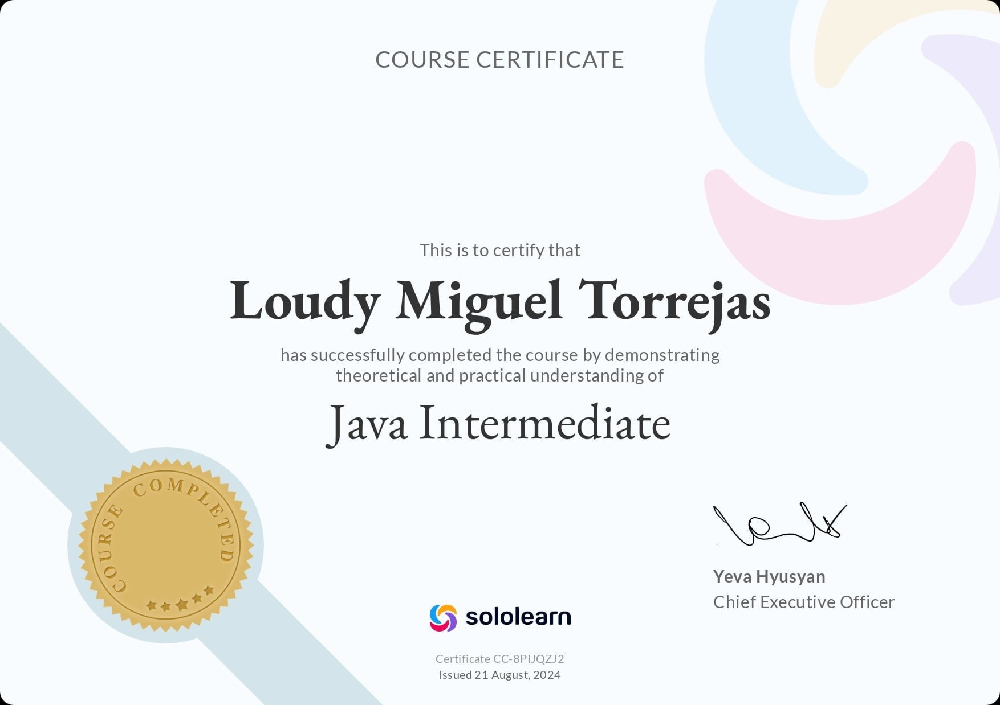
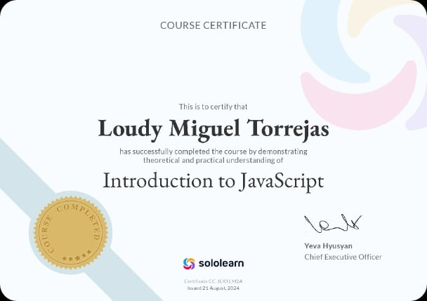
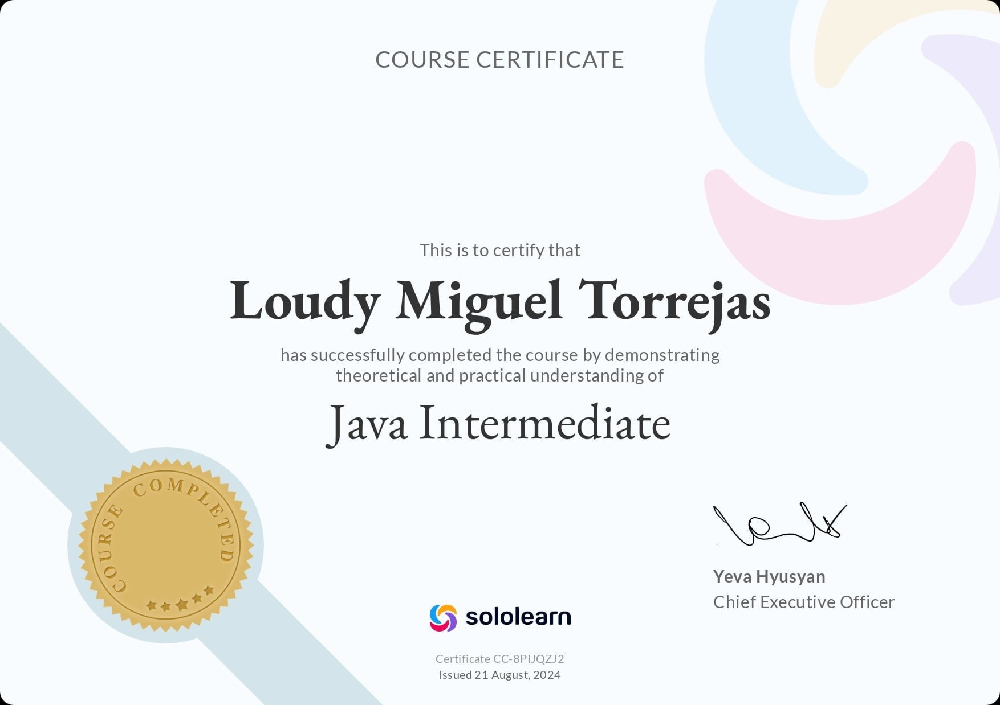
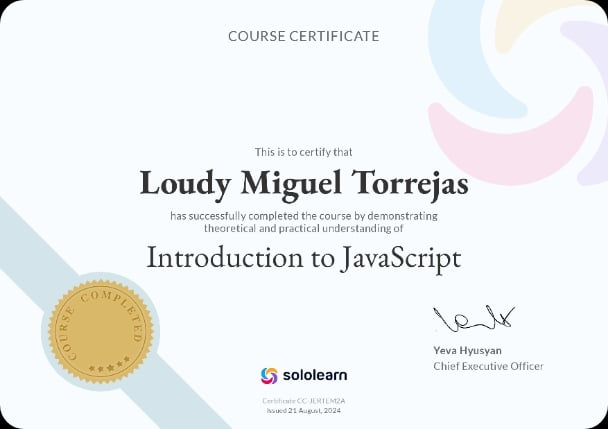
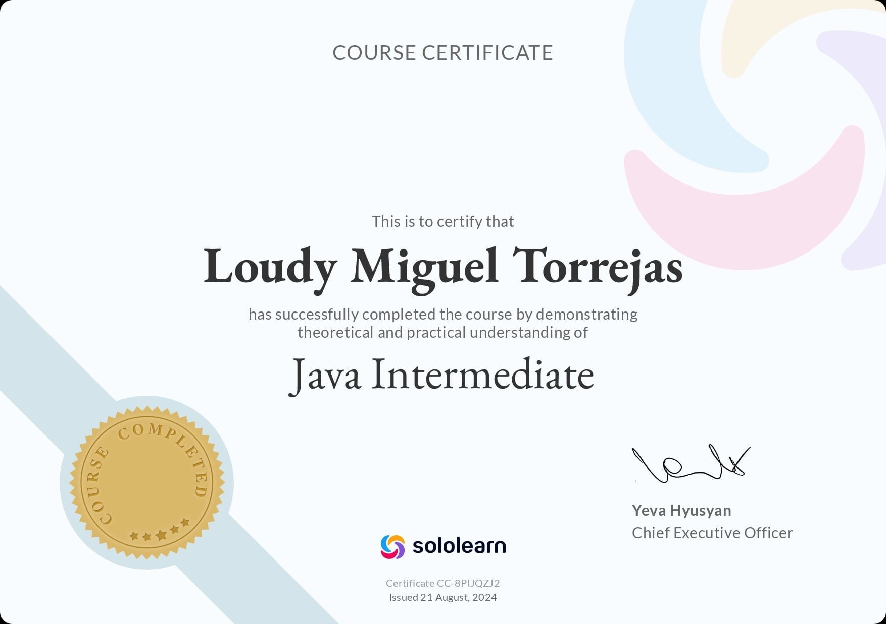
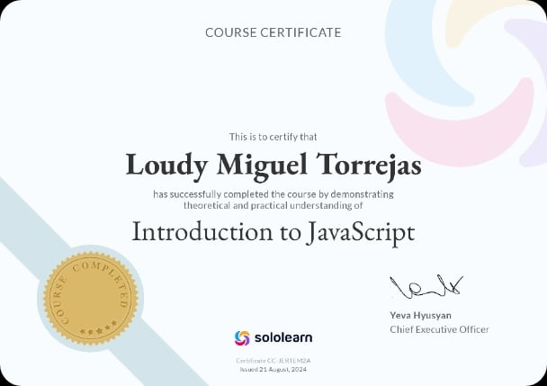

Hello I'm Loudy Miguel
Front End Developer
I'm Front End Developer based in Philippines, And I'm very passionate and dedicated to my work.
LD
LD
LD
LD
Personal Background
I currently studying Bachelor of Science Information Technology at Buenavista Community College II-year, sy: 2023-2027
Hobbies
Sports
Online course certificate
 



< >


Areas of Expertise
Progress
Progress
Progress
Progress
Progress
More Courses & Courses in progress